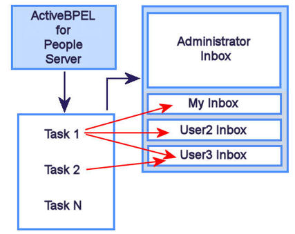

About ActiveBPEL® Server and the Inbox
ActiveBPEL server runs Business Process Execution Language (BPEL) processes that can include tasks intended for users. An Inbox application allows users to receive, manage and work on tasks.
As the following illustration shows, ActiveBPEL server runs BPEL processes, and when it encounters a task that requires user intervention, it sends the task to the appropriate administrator and user Inboxes.

When tasks are created, user groups are identified that are appropriate for handling the tasks. The same task may be sent to multiple users, since not everyone is available to work on a new task. Only one user claims any task.
When the task is complete, the user sends the appropriate response to the ActiveBPEL server so that the BPEL process can continue its activities.
There are many ways for users and administrators to complete and manage tasks, as described in About ActiveBPEL Inbox.
Copyright (c) 2004-2008 Active Endpoints, Inc.